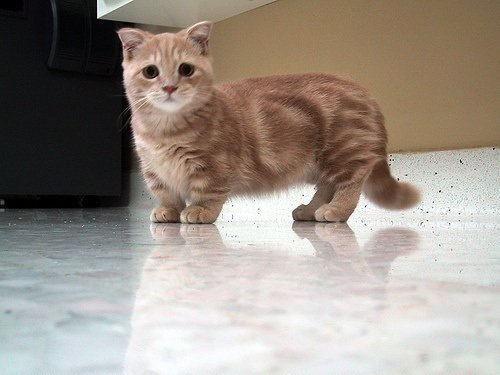

nsdkljngkwedv
Learn more about kittens here!!!
<
This page is about kittens, kittens kittens!
My favourite types of cats:
- Orange tabby
- Munchkin cat
- Siamese cat
Things you should know:
- They shed alot
- They love attention
- Watch out for those claws!
See more!


Cats are lovable creatures and are perfect for people that are looking for an easy pet to take care of!
Petting a cat:
- Prepare to be full of cat fur!
- Stroke with slow and smooth movements
- Try using a cat comb! They love it!
Back to top!
Created by Rigel Quindipan